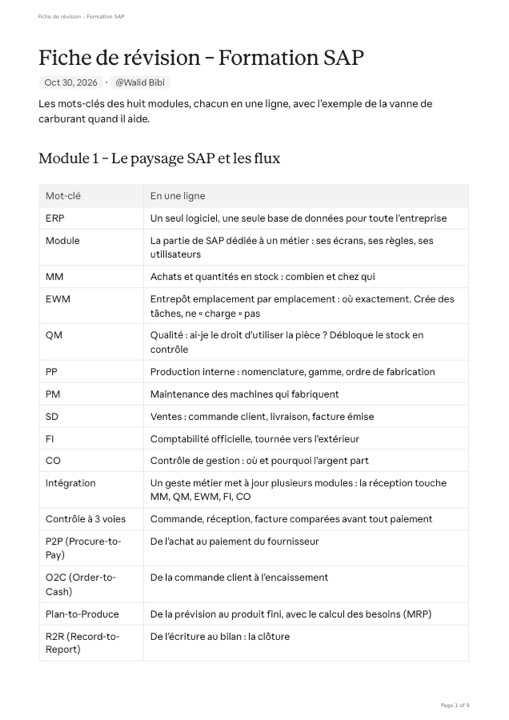
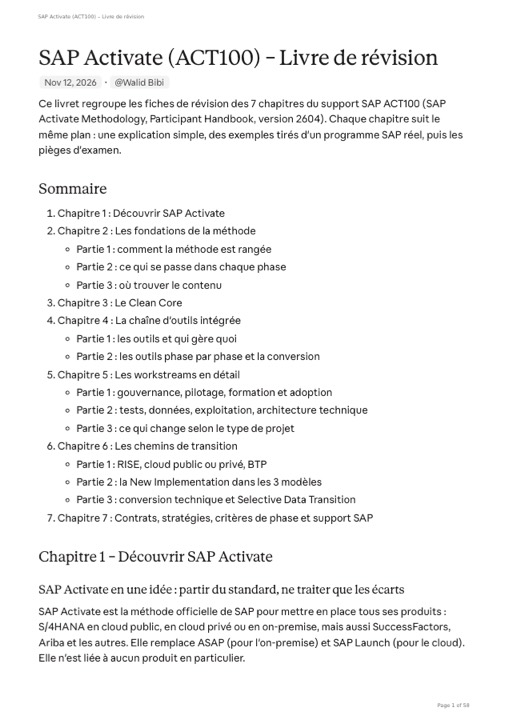

Version anglaise du portail
Ce qui change : un sélecteur FR / EN en haut à droite de chaque page. En anglais, l'accueil n'affiche plus de doublons. Les documents restés en français portent l'étiquette « In French ». Le lecteur l'annonce aussi, dans un bandeau sous sa barre.
Choix faits
- Deux boutons FR et EN toujours visibles, l'actif en plein. On voit d'un coup d'œil où l'on est et où l'on peut aller.
- Même place partout : le dernier élément à droite de l'en-tête. Le sélecteur défile avec la page. Il ne croise jamais le bouton « Glossaire », en bas à droite.
- Changer de langue garde la page ouverte, y compris dans le lecteur. Un document français y reste ouvert, avec le bandeau.
- Les textes anglais de cette maquette sont indicatifs. Ceux des traductions fournies par Walid font foi.
Variantes écartées
- Drapeaux : un drapeau désigne un pays, pas une langue.
- Liste déroulante : un clic de plus pour deux choix seulement.
- Bouton unique « English » / « Français » : l'état actuel n'est pas visible.
- Sélecteur dans le glossaire : absent quand le glossaire est fermé sur téléphone.
Thème de la maquette :
ÉCRAN 1Le sélecteur FR / EN à trois endroits
Ici le site est en français : seul le sélecteur s'ajoute. Les boutons de la maquette sont cliquables et utilisables au clavier (Tab, puis Entrée ou Espace).
1a · Accueil · bureau (1440 px, réduit) · glossaire fixé à droite
Formation SAP · Directeur de programme
Portail SAP du DP
Tous les supports construits pour comprendre et piloter un programme SAP, dans l'ordre où les parcourir. Le glossaire reste ouvert à droite sur toutes les pages, frises comprises : tapez « / » pour chercher un terme.
Parcours conseillé
Du plus général au plus opérationnel.
Le sélecteur est aligné sur le surtitre, en haut à droite de la colonne de contenu. Le glossaire fixé ne le recouvre pas.
1b · Accueil · téléphone (390 px) · deux emplacements possibles
Variante A · en haut de page (recommandée)
Formation SAP · Directeur de programme
Portail SAP du DP
Tous les supports construits pour comprendre et piloter un programme SAP, dans l'ordre où les parcourir. Le glossaire reste ouvert à droite sur toutes les pages, frises comprises : tapez « / » pour chercher un terme.
Parcours conseillé
Du plus général au plus opérationnel.
Pour : rien ne flotte sur le contenu, un seul bouton flottant reste. Contre : il faut remonter en haut pour changer de langue. On change rarement de langue.
Variante B · flottant en bas à gauche
Formation SAP · Directeur de programme
Portail SAP du DP
Tous les supports construits pour comprendre et piloter un programme SAP, dans l'ordre où les parcourir. Le glossaire reste ouvert à droite sur toutes les pages, frises comprises : tapez « / » pour chercher un terme.
Parcours conseillé
Du plus général au plus opérationnel.
Pour : toujours à portée de pouce. Contre : deux pastilles flottantes cachent le bas des cartes. Dans le lecteur, elles cacheraient la page.
1c · Frise · bureau (réduit) · à côté de « ← Portail »
Nouvelle implémentation S/4HANA · SAP Activate
Une migration greenfield vers S/4HANA, de A à Z
Les six phases SAP Activate sur une frise. Cliquez sur une barre, une quality gate ou le go-live pour ouvrir le détail.
Exemple fil rouge : Calvane (fictif), fabricant de pompes, 3 usines, ERP maison remplacé par S/4HANA
Le bouton retour et le sélecteur partagent la même ligne. Rien ne bouge en dessous.
1d · Frise · téléphone (390 px)
Nouvelle implémentation S/4HANA · SAP Activate
Une migration greenfield vers S/4HANA, de A à Z
Les six phases SAP Activate sur une frise. Cliquez sur une barre, une quality gate ou le go-live pour ouvrir le détail.
Exemple fil rouge : Calvane (fictif), fabricant de pompes, 3 usines, ERP maison remplacé par S/4HANA
1e · Lecteur · bureau (réduit) · dernier élément de la barre
DeckFormation SAP · Synthèse
Télécharger

Flèches ← → du clavier pour tourner les pages · « / » pour le glossaire
Un trait fin sépare le sélecteur du bouton Télécharger : la langue n'est pas une action sur le document.
1f · Lecteur · téléphone (390 px) · deuxième ligne de la barre
DeckFormation SAP · Synthèse
La deuxième ligne tient sur un téléphone de 375 px : pagination (environ 190 px), sélecteur (90 px), Télécharger (40 px). Sur un écran plus étroit, elle revient à la ligne au lieu de déborder.
ÉCRAN 2L'accueil en anglais
Plus de section « Versions anglaises » : les cartes Synthèse et Migration ouvrent directement leur version anglaise. ACT100 et ACT200 existent en anglais : pas d'étiquette. Fiche de révision, simulation d'entretien et script de narration restent en français : étiquette « In French ». Les aperçus restent ceux d'aujourd'hui jusqu'à US-018.
2a · Bureau (réduit)
SAP training · Program Director
SAP Program Director's Portal
All the materials built to understand and run an SAP program, in the order to read them. The glossary stays open on the right on every page, timelines included: press “/” to search for a term.
Recommended path
From the big picture to day-to-day delivery.
Timelines, from A to Z
Each approach on an illustrated timeline, with a running example, what AI brings, and the main failure risks.
Other resources
Generic content, with no client-specific information. Everything opens in the portal: documents in a page-by-page reader, with a button to download them.
Le type « Frise » devient « Timeline ». Les titres perdent le suffixe « (EN) », inutile dans un portail déjà en anglais. Neuf cartes au lieu de onze.
2b · Téléphone (390 px) · haut de page
SAP training · Program Director
SAP Program Director's Portal
All the materials built to understand and run an SAP program, in the order to read them. The glossary stays open on the right on every page, timelines included: press “/” to search for a term.
Recommended path
From the big picture to day-to-day delivery.
2c · Téléphone · plus bas : « Other resources »
Other resources
2d · L'étiquette « In French » : deux placements
Variante A · sur l'aperçu
In French
DocReview sheetThe essentials on one page, to reread before an interview.Très visible. Mais disparaît si l'aperçu manque, et se lit mal sur un aperçu sombre.
Variante B · à côté du type (recommandée)
DocIn FrenchReview sheetThe essentials on one page, to reread before an interview.
Lue juste avant le titre, par l'œil comme par un lecteur d'écran. Tient même sans aperçu.
Sans étiquette · document anglais

CertificationACT100 · Study guideSAP Activate: all 7 chapters in one document, ready to print.ÉCRAN 3Le glossaire en anglais, termes dépliés
Quand le terme anglais remplace un terme français, le nom français s'affiche à côté, précédé d'un petit « FR ». On le distingue ainsi d'un nom complet (par exemple « ART · Agile Release Train »). La recherche trouve aussi le nom français.
3a · Bureau · panneau fixé à droite (380 px)
3b · Téléphone (390 px) · tiroir ouvert
Les catégories anglaises sont un peu plus longues : elles reviennent à la ligne entre deux pastilles, sans déborder. Un lien vers un document français porterait la même étiquette : Doc · Review sheetIn French
ÉCRAN 4Le lecteur en anglais sur un document français
Un bandeau d'une ligne, dans le flux, juste sous la barre. Il pousse la page vers le bas au lieu de la recouvrir. Il n'a pas de bouton fermer : il est court et rappelle une information utile à chaque page. Un document anglais n'a aucun bandeau.
4a · Bureau (réduit) · document français qui a une version anglaise
DeckFormation SAP · Synthèse
Download
This document is in French.Open the English version →
← → arrow keys to turn pages · “/” for the glossary
Cas rare : on y arrive par un lien français partagé, ou en passant en anglais dans le lecteur. Le titre reste celui du document ouvert, en français. Le lien ouvre sap-training-summary-en.pdf à la page 1.
4b · Téléphone · sans version anglaise
DocReview sheet
This document is in French.
4c · Téléphone · avec version anglaise
Sur téléphone, le bandeau prend une ou deux lignes (34 à 52 px). Le texte revient à la ligne, il ne déborde pas.